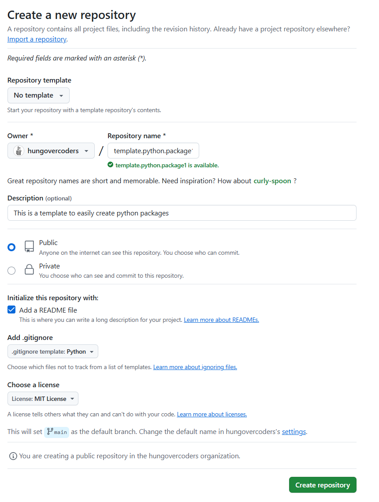
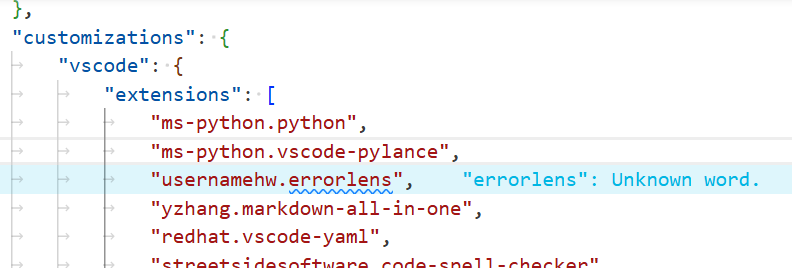
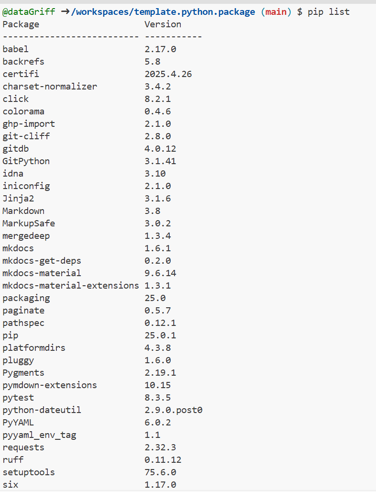
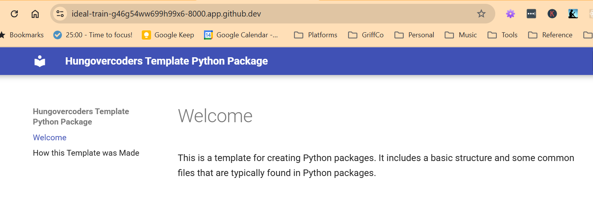
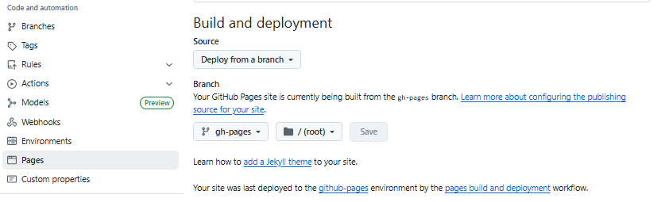
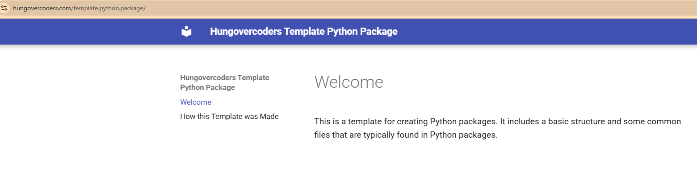
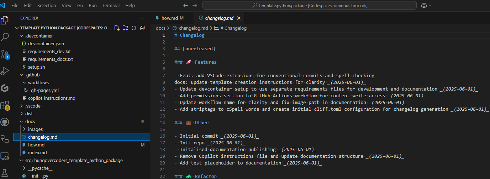
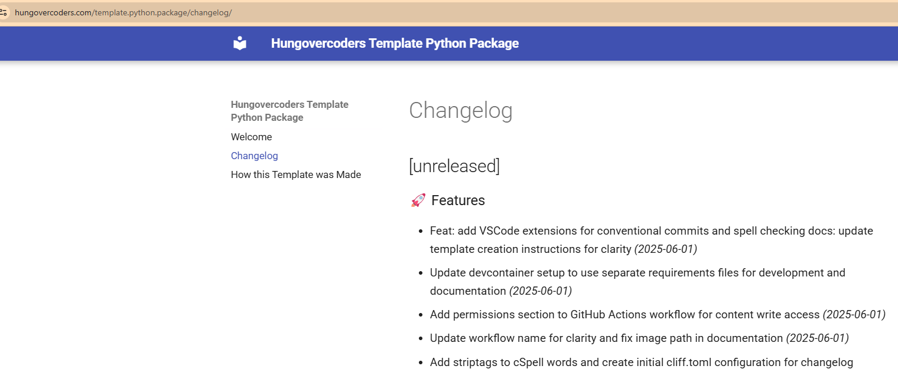
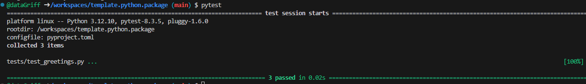
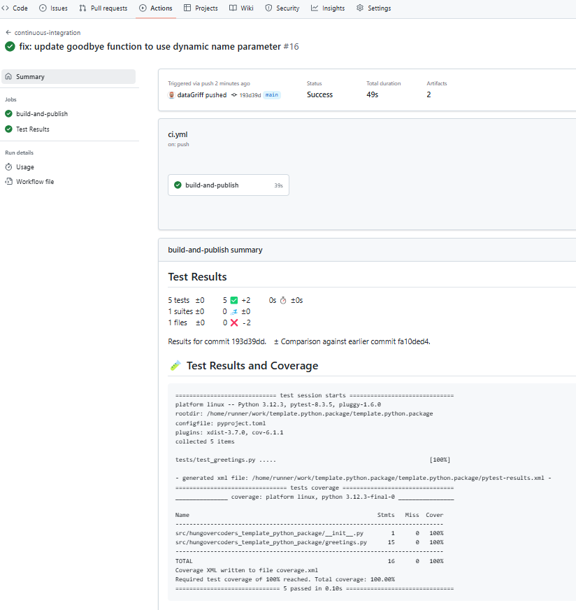

How this Template was Made
Initialise Repo and Environment
-
Created a new repository on GitHub.
- Gave an appropriate name and description.
- Added a README file.
- Added a .gitignore file for Python.
- Selected a license (MIT License).

-
Added Copilot Context File
- Created a
.github/copilot-instructions.mdfile to provide context for Copilot.
- Created a
-
Opened in codespaces and amended environment configuration.
- Added a
devcontainer.jsonfile to configure the development environment using devcontainers standards in vs code. - Added a requirements_dev.txt file for the packages required for development.
- Added a requirements_docs.txt file for the packages required for documentation.
- Created a setup.sh file to automate the post create setup process in the devcontainer.
- Added a
-
Reopened the codespace to confirm devcontainer configuration
- Confirmed VS code extensions installed.
- Leveraged errorlens and spell checker to clean-up any markdown or spelling errors.

- Confirmed package requirements installed in the codespace.
bash pip list
Published Documentation
-
Created documentation
- Utilising MkDocs for documentation generation, installed as part of devcontainer setup.
- Created a
mkdocs.ymlfile to configure the documentation. - Created a
docsdirectory with an initialindex.mdfile. - Built the documentation using:
bash mkdocs build --strict- Served the documentation locally to confirm it works:
bash mkdocs serve --strict
-
Published documentation to GitHub Pages
- Enabled GitHub Pages in the repository settings, selecting the
gh-pagesbranch as the source.

- Created a
.github/workflows/gh-pages.ymlfile with the necessary steps to build and deploy the documentation to the github pages branch configured above. - Committed and pushed changes to trigger the workflows.
- Confirmed the documentation is available at
https://<username>.github.io/<repository-name>/. e.g. https://hungovercoders.github.io/template.python.package/

- Enabled GitHub Pages in the repository settings, selecting the
Created Changelog
-
Create a
docs/changelog.mdfile- Utilised git-cliff for changelog generation installed as part of devcontainer setup.
- Created a cliff.toml file to configure the changelog.
- Confirmed working by running:
bash git-cliff -c cliff.toml- Can see changelog file populated locally.

-
Added a GitHub Action to automatically generate the changelog
- Amended
.github/workflows/gh-pages.ymlfile to include a step to generate the changelog automatically using git-cliff. - Confirmed working by pushing changes and checking the generated changelog on live documentation site.

- Amended
Initialise Package
-
Initialised the package using uv
- Leveraged uv to initialise the package which was installed as part of devcontainer setup.
- Execute script below to initialise package.
bash uv init --lib hungovercoders_template_python_package- Moved pyproject.toml and python-version file along with src folder to the root of the repo and cleared up directory.
- Added
greetingsmodule with hello function with the ability to call cli. - Updated pyproject.toml file with appropriate configuration details including a cli call to the hello function.
- Installed the package locally using:
bash pip install -e .- Confirmed the package is installed and working by running:
bash hungovercoders-template-hello --name griff- Output should be:
bash Hungovercoders say hello to griff! -
Added tests for the package
- Created a [
tests] directory with an initialtest_greetings.pyfile. - Utilised pytest for testing, installed as part of devcontainer setup by running:
bash pytest- Confirmed tests pass and package is functioning as expected. 
- Created a [
-
Linted the code
-
Utilised ruff for linting, installed as part of devcontainer setup.
-
Confirmed code is linted and follows best practices by running the command.
bash uvx ruff check . -
-
Checked distribution files
- Utilised twine to check the distribution files.
- Created the distribution files using:
bash uv build- Checked the distribution files using:
bash uvx twine check dist/* -
Created github actions to run linting, distribution and testing on pull requests and pushes to main branch.
- Created a
.github/workflows/ci.ymlfile with the necessary steps to run linting, distribution checks and testing. - Confirmed working by pushing changes and checking the actions tab in GitHub.
- Test results can be seen to be published correctly. 
- Created a
Publish Package to PyPI
-
Created a PyPI account
- Created an account on PyPI.
- Created an API token for the account.
- Added the PyPI credentials to the GitHub repository secrets as
PYPI_API_TOKEN.
-
Amended the CI workflow
- Amended the
.github/workflows/ci.ymlfile to include a step to publish the package to PyPI if a new tag is pushed.
- Amended the
-
Create tag and push script
- Created a
tag_and_push.shscript to create a new tag and push it to the remote repository.
- Created a
-
Pypi confirmation
- Confirmed the package is available on PyPI by visiting https://pypi.org/project/hungovercoders-template-python-package/.
- Confirmed the package can be installed using:
bash pip install hungovercoders-template-python-package- Confirmed the package is working by running:
bash hungovercoders-template-hello --name griff- Output should be:
bash Hungovercoders say hello to griff!
Added Schema Validation
hungovercoders-validate-organisation /workspaces/template.python.package/tests/examples/organisation.json
hungovercoders-validate-organisation /workspaces/template.python.package/tests/examples/organisation.json --output-format json
hungovercoders-validate-organisation --show-schema